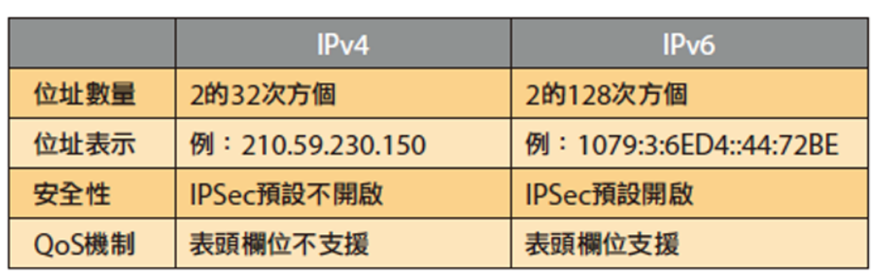

網路通訊協定（Internet Protocol，IP）是用於網路交換封包的一種協定，它定義了定址方式及資料的封裝結構。簡單來說，就是你電腦的地址，而目前最被廣泛使用的網路協定為IPv4，現代人上網使用的任何服務幾乎都使用到它。而近幾年經常被提及的IPv6則是被視為繼承IPv4的下一代網路協定。
IPV6起源是因90年代有學者擔心IPv4位址不夠使用，所以重新規畫，因此IPv6除了在位址數量上大幅增加外，更進一步針對安全性、QoS等問題加以改進。
雖然這兩個協定似乎只是版本上的差異，但實際上它們是徹底完全不同的兩個協定。也因為這樣，IPv4與IPv6不能互通，IPv4的用戶只能連線到IPv4的網站，且IPv6亦然。而兩者間較明顯的差異比較如下：
位址的數量
這兩個世代的網路協定，最明顯的差異就在於其提供的網路位址數量。IPv4的位址格式是採用32位元長度，位址能提供2的32次方個，換算後約42億個。雖然IPv4有這麼多IP位址，但依舊在2011年的2月3日消耗殆盡。
而IPv6的位址格式則採用128位元長度，其位址能提供2的128次方個。它所能提供的IP位址，遠遠超過IPv4的數量，預估能讓地球上每個人都分到100萬個IP位址，或是地球上每平方公尺面積皆提供1000多個IP位址。簡而言之，轉換到IPv6後，IP位址的數量多到幾乎不可能用盡。
位址表示方式
表頭格式與功能
IPv6的表頭格式是改良自IPv4，它有大幅度的修改，讓表頭格式更為簡化及具有擴充性。IPv6與IPv4共同的欄位有
Version
Source Address
| Source address selection（來源端位址選擇） | 應用程式可以指定來源 IP（通常使用 sockets bind()）。 如果它連結到 INADDR_ANY，則會根據路徑選擇來源 IP。 | 就 IPv4 而言，應用程式可以使用 bind() 指定來源 IPv6 位址。類似 IPv4，它可以讓系統使用 in6addr_any 選擇 IPv6 來源位址。 但是因為 IPv6 線路有許多 IPv6 位址，所以選擇來源 IP 的內部方法不同。 |
Destination Address
還有部分欄位功能類似，名稱卻不同。譬如Payload Length取代了Datagram Length、Next Header取代Protocol，以及Hop Limit取代TTL。
而IPv6亦增加了Flow Label及Priority等兩個欄位，它們的功能是用來支援像視訊、語音這類即時服務的需求，以提高QoS的品質。
就Flow Label欄位來說，IPv6的封包能夠在該欄位留下標記。在傳輸時，一連串的封包會要求所經過的路由器，提供特別的處理。而路由器則會透過該欄位，辨識封包的Flow Level；而Priority則可以設定封包傳輸的優先順序，透過這欄位的檢查，讓較重要的封包優先傳送。
https://www.ithome.com.tw/tech/92046
https://www.ibm.com/support/knowledgecenter/zh-tw/ssw_ibm_i_71/rzai2/rzai2compipv4ipv6.htm#rzai2compipv4ipv6__compaddress